Diagramas del sistema
16 diagramas con explicaciones, fuentes editables e imágenes para adjuntar a stories. Arquitectura objetivo y modelos propuestos; todavía no representan código implementado. Los pendientes y escenarios están en los documentos enlazados.
Índice y mapa de stories · Guía didáctica · Backlog · Decisiones (ADR)
01-arquitectura.md · diseño objetivo o propuesta, sin implementación comprobada · HU-012, HU-013, HU-021, HU-027
ARQ-01. Contexto y actores
Ver Mermaid editable
flowchart TB
Dueno["Dueño<br/>carga, consulta y<br/>administra categorías"]
Carga["Personal con rol carga<br/>anota y corrige movimientos"]
Consulta["Personal con rol consulta<br/>mira y exporta reportes"]
Equipo["Equipo<br/>da de alta locales y personas"]
Sistema["Cuadernos<br/>en la nube, desde el navegador<br/>del celular o la PC"]
Archivos["PDF y Excel<br/>reportes exportados"]
Caja["Sistema de caja del local"]
Dueno --> Sistema
Carga --> Sistema
Consulta --> Sistema
Equipo --> Sistema
Sistema --> Archivos
Caja -.-|"sin conexión: no lee<br/>ni escribe nada"| Sistema01-arquitectura.md · diseño objetivo o propuesta, sin implementación comprobada · HU-003, HU-005, HU-016
ARQ-02. Contenedores: qué corre y dónde
Ver Mermaid editable
flowchart LR
Nav["Navegador<br/>celular o PC"]
subgraph Nube["Nube"]
Portal["Portal React<br/>Cloudflare Pages"]
API["API Django + DRF<br/>Cloud Run"]
PG[("PostgreSQL<br/>Neon, con RLS")]
end
GA["GitHub Actions<br/>backup nocturno"]
R2[("Cloudflare R2<br/>backups cifrados")]
Nav -->|"HTTPS"| Portal
Nav -->|"HTTPS, usuario<br/>y contraseña"| API
API --> PG
GA -->|"pg_dump"| PG
GA --> R201-arquitectura.md · diseño objetivo o propuesta, sin implementación comprobada · HU-001, HU-003, HU-020
ARQ-03. Capas y apps del backend
Ver Mermaid editable
flowchart TB
subgraph Front["frontend: React"]
direction LR
Pantallas["Pantallas"] --> Contratos["Capa de servicios<br/>contratos tipados"]
end
subgraph Back["backend: Django"]
direction LR
Vistas["Vistas DRF<br/>serializers y permisos"] --> Servicios["Servicios<br/>cargar, corregir, anular,<br/>espejo, reportes"] --> Modelos["Modelos y consultas"]
end
subgraph Apps["Tres apps"]
direction LR
Notebooks["notebooks<br/>movimientos, categorías,<br/>reportes, exportación"]
Accounts["accounts<br/>personas, membresías, roles"]
Core["core<br/>locales, auditoría, dinero"]
Notebooks -->|"depende de"| Accounts
Accounts -->|"depende de"| Core
Notebooks -->|"depende de"| Core
end
Front -->|"HTTP JSON"| Back
Back --> Apps01-arquitectura.md · diseño objetivo o propuesta, sin implementación comprobada · HU-010, HU-011, HU-012, HU-013
ARQ-04. Locales como tenants
Ver Mermaid editable
flowchart LR
Ana["Usuaria: Ana, consulta"]
Lucia["Usuaria: Lucía, dueña"]
Tomas["Usuario: Tomás, carga"]
subgraph Membresias["Membresías"]
M3["Ana · Local Centro · consulta"]
M1["Lucía · Local Centro · dueña"]
M2["Lucía · Local Norte · dueña"]
M4["Tomás · Local Norte · carga"]
end
subgraph Datos["Datos por tenant_id"]
L1[("Local Centro<br/>movimientos y categorías")]
L2[("Local Norte<br/>movimientos y categorías")]
end
Ana --> M3 -->|"solo ver y exportar"| L1
Lucia --> M1 --> L1
Lucia --> M2 --> L2
Tomas --> M4 -->|"cargar y corregir"| L201-arquitectura.md · diseño objetivo o propuesta, sin implementación comprobada · HU-002, HU-005, HU-006, HU-007
ARQ-05. Entornos
Ver Mermaid editable
flowchart LR
subgraph Dev["Desarrollo: PC de cada uno"]
DC["Docker Compose<br/>Django + PostgreSQL + Vite<br/>seed inventado"]
end
subgraph Pru["Pruebas"]
PN["Cloud Run + Neon + Pages<br/>datos inventados"]
end
subgraph Prod["Producción"]
RN["Cloud Run + Neon + Pages<br/>datos reales"]
end
GH["GitHub Actions"]
DC -->|"pull request"| GH
GH -->|"merge a main"| PN
GH -->|"tag y aprobación"| RN02-casos-de-uso.md · diseño objetivo o propuesta, sin implementación comprobada · HU-010, HU-012, HU-013, HU-021, HU-022, HU-023, HU-024, HU-026, HU-028, HU-029
CU-01. Casos de uso de los cuadernos
Ver Mermaid editable
flowchart LR
subgraph Actores[" "]
direction TB
Consulta["Actor: Consulta"]
Carga["Actor: Carga<br/>también hace lo de Consulta"]
Dueno["Actor: Dueño<br/>también hace lo de Carga"]
Equipo["Actor: Equipo"]
end
subgraph Sistema["Cuadernos, en la nube"]
direction TB
C01(["C01 Ingresar"])
C03(["C03 Buscar y filtrar movimientos"])
C04(["C04 Ver historial de un movimiento"])
C05(["C05 Ver saldo y reporte del período"])
C07(["C07 Cargar movimiento"])
C08(["C08 Corregir o anular movimiento"])
C10(["C10 Administrar categorías"])
C12(["C12 Dar de alta locales,<br/>personas y membresías"])
end
Consulta --> C01
Consulta --> C03
Consulta --> C04
Consulta --> C05
Carga --> C07
Carga --> C08
Dueno --> C10
Equipo --> C1202-casos-de-uso.md · diseño objetivo o propuesta, sin implementación comprobada · HU-012, HU-014, HU-025, HU-027
CU-02. Relaciones entre casos de uso
Ver Mermaid editable
flowchart LR
C02(["C02 Elegir o cambiar de local"]) -.->|"extiende: tiene<br/>más de un local"| C01(["C01 Ingresar"])
C06(["C06 Exportar a PDF o Excel"]) -.->|"extiende"| C05(["C05 Ver saldo y reporte"])
C09(["C09 Generar venta espejo"]) -.->|"extiende: gasto que<br/>no es en efectivo"| C07(["C07 Cargar movimiento"])
C09 -.->|"extiende: gasto que<br/>no es en efectivo"| C08(["C08 Corregir o anular"])
C07 -.->|"incluye"| C11(["C11 Registrar en la auditoría"])
C08 -.->|"incluye"| C11
C10(["C10 Administrar categorías"]) -.->|"incluye"| C11
C12(["C12 Alta de locales y personas"]) -.->|"incluye"| C1103-clases.md · diseño objetivo o propuesta, sin implementación comprobada · HU-013, HU-020, HU-022, HU-025
CLA-01. Locales, personas y cuadernos
Ver Mermaid editable
classDiagram
class Local {
nombre
zonaHoraria
}
class Persona {
email
activa
}
class Membresia {
rol
activa
puede(permiso)
}
class Movimiento {
fecha
tipo
categoria
descripcion
importe
medio
espejoDe
anulado
motivoAnulacion
cargadoPor
corregir(datos, motivo)
anular(motivo)
}
class Categoria {
nombre
tipo
activa
delSistema
}
class EntradaAuditoria {
actor
accion
antes
despues
motivo
hora
}
Persona "1" --> "*" Membresia
Local "1" --> "*" Membresia
Local "1" --> "*" Movimiento
Local "1" --> "*" Categoria
Movimiento "*" --> "1" Categoria
Movimiento "0..1" --> "1" Movimiento : espejo de
Movimiento ..> EntradaAuditoria : genera
note for Movimiento "Un gasto que no es en efectivo genera su venta espejo. Nada se borra: se anula."
note for Membresia "El código pregunta puede(permiso), nunca el nombre del rol."04-datos.md · diseño objetivo o propuesta, sin implementación comprobada · HU-010, HU-011, HU-013, HU-014, HU-020, HU-025
DAT-01. Base de datos
Ver Mermaid editable
erDiagram
USER ||--o{ MEMBERSHIP : has
TENANT ||--o{ MEMBERSHIP : grants
TENANT ||--o{ NOTEBOOK_ENTRY : owns
TENANT ||--o{ NOTEBOOK_CATEGORY : owns
TENANT ||--o{ AUDIT_ENTRY : records
USER ||--o{ NOTEBOOK_ENTRY : creates
USER ||--o{ AUDIT_ENTRY : acts
NOTEBOOK_CATEGORY ||--o{ NOTEBOOK_ENTRY : classifies
NOTEBOOK_ENTRY |o--o| NOTEBOOK_ENTRY : mirrors
USER {
uuid id PK
string email UK
bool is_active
}
TENANT {
uuid id PK
string name
string timezone
}
MEMBERSHIP {
uuid user_id FK
uuid tenant_id FK
string role "owner, editor o viewer"
bool is_active
}
NOTEBOOK_ENTRY {
uuid id PK
uuid tenant_id FK "obligatorio, con RLS"
uuid category_id FK
uuid created_by FK
uuid mirror_of FK "solo en la venta espejo"
uuid idempotency_key UK
date date
string kind "income o expense, haber en P-01"
string payment_method
string description
numeric amount "numeric 14,2"
bool is_voided
string void_reason
}
NOTEBOOK_CATEGORY {
uuid id PK
uuid tenant_id FK "con RLS"
string name
string kind
bool is_active
bool is_system
}
AUDIT_ENTRY {
uuid id PK
uuid tenant_id FK "con RLS"
uuid actor_id FK
string action
string entity
uuid entity_id
json before
json after
string reason
timestamp created_at
}05-secuencias-tecnicas.md · diseño objetivo o propuesta, sin implementación comprobada · HU-011, HU-014, HU-021, HU-025
TEC-01. Guardar un gasto con venta espejo
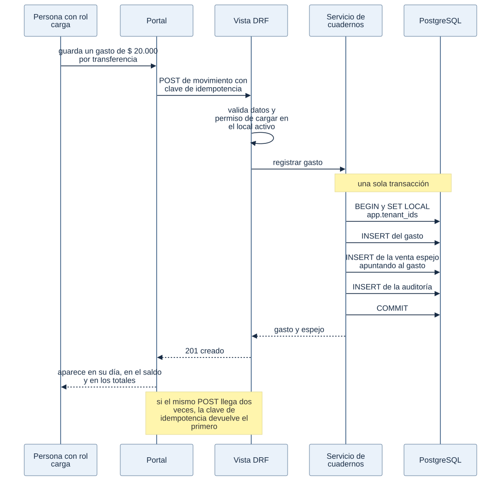
Ver Mermaid editable
sequenceDiagram
participant P as Persona con rol carga
participant UI as Portal
participant V as Vista DRF
participant S as Servicio de cuadernos
participant DB as PostgreSQL
P->>UI: guarda un gasto de $ 20.000 por transferencia
UI->>V: POST de movimiento con clave de idempotencia
V->>V: valida datos y permiso de cargar en el local activo
V->>S: registrar gasto
Note over S,DB: una sola transacción
S->>DB: BEGIN y SET LOCAL app.tenant_ids
S->>DB: INSERT del gasto
S->>DB: INSERT de la venta espejo apuntando al gasto
S->>DB: INSERT de la auditoría
S->>DB: COMMIT
S-->>V: gasto y espejo
V-->>UI: 201 creado
UI-->>P: aparece en su día, en el saldo y en los totales
Note over UI,V: si el mismo POST llega dos veces, la clave de idempotencia devuelve el primero05-secuencias-tecnicas.md · diseño objetivo o propuesta, sin implementación comprobada · HU-004, HU-005, HU-006
TEC-02. CI/CD de punta a punta
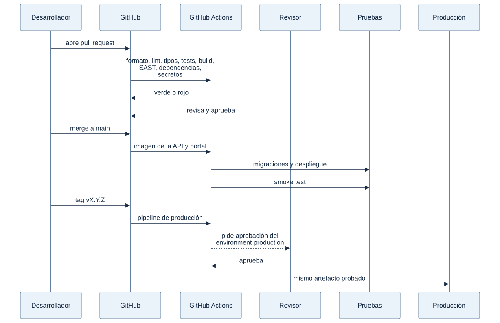
Ver Mermaid editable
sequenceDiagram
participant Dev as Desarrollador
participant GH as GitHub
participant CI as GitHub Actions
participant Rev as Revisor
participant Pru as Pruebas
participant Prod as Producción
Dev->>GH: abre pull request
GH->>CI: formato, lint, tipos, tests, build, SAST, dependencias, secretos
CI-->>GH: verde o rojo
Rev->>GH: revisa y aprueba
Dev->>GH: merge a main
GH->>CI: imagen de la API y portal
CI->>Pru: migraciones y despliegue
CI->>Pru: smoke test
Dev->>GH: tag vX.Y.Z
GH->>CI: pipeline de producción
CI-->>Rev: pide aprobación del environment production
Rev->>CI: aprueba
CI->>Prod: mismo artefacto probado06-flujos-funcionales.md · diseño objetivo o propuesta, sin implementación comprobada · HU-011, HU-012, HU-013
FUN-01. Ingresar y elegir local
Ver Mermaid editable
flowchart TD
A["Usuario y contraseña"] --> B{"¿Válidos?"}
B -->|"no"| C["Rechazo sin decir cuál falló<br/>auditado"]
B -->|"sí"| D{"¿Cuántas membresías activas?"}
D -->|"ninguna"| E["Mensaje: sin acceso a ningún local<br/>auditado"]
D -->|"una"| F["Entra directo a ese local<br/>sin pantalla de selección"]
D -->|"más de una"| G["Elegir local"]
G --> H["Entra al local elegido"]
F --> I["Pantalla inicial según su rol<br/>en ese local"]
H --> I
I --> J{"¿Tiene más de un local?"}
J -->|"sí"| K["Selector de local en la barra"] --> G
J -->|"no"| L["Sin selector"]06-flujos-funcionales.md · diseño objetivo o propuesta, sin implementación comprobada · HU-021, HU-024, HU-025
FUN-02. Cargar un movimiento
Ver Mermaid editable
flowchart TD
A["Persona dentro de un local<br/>(FUN-01)"] --> B{"¿Rol carga o dueño?"}
B -->|"no, consulta"| C["Ve movimientos y reportes<br/>no ve el botón de cargar<br/>la API responde 403"]
B -->|"sí"| D["Fecha, tipo, categoría,<br/>descripción, importe y medio"]
D --> E{"¿Datos válidos?"}
E -->|"no"| F["Error claro, no se guarda"] --> D
E -->|"sí"| G{"¿Es un gasto pagado con débito,<br/>crédito, QR o transferencia?"}
G -->|"no"| H["Movimiento y auditoría<br/>en una transacción"]
G -->|"sí"| I["Gasto, venta espejo del mismo importe<br/>y auditoría en una transacción"]
H --> J["Aparece en su día,<br/>en el saldo y en los totales"]
I --> J06-flujos-funcionales.md · diseño objetivo o propuesta, sin implementación comprobada · HU-024, HU-025, HU-026, HU-014
FUN-03. Corregir o anular un movimiento
Ver Mermaid editable
flowchart TD
A["Movimiento en la lista"] --> B{"¿Rol carga o dueño?"}
B -->|"no"| C["Ve el movimiento y su historial"]
B -->|"sí"| D{"¿Es una venta espejo?"}
D -->|"sí"| E["No se edita ni se anula sola:<br/>enlace a su gasto"]
D -->|"no"| F{"¿Qué hace?"}
F -->|"corregir"| G["Cambia datos y escribe el motivo"]
F -->|"anular"| H["Escribe el motivo"]
G --> I{"¿Después del cambio es un gasto<br/>que no es en efectivo?"}
I -->|"sí"| J["Se crea o se actualiza<br/>su venta espejo"]
I -->|"no"| K["Si tenía venta espejo, se anula"]
H --> L["Se anula el movimiento<br/>y su venta espejo si tiene"]
J --> M["Auditoría con antes, después y motivo<br/>en la misma transacción"]
K --> M
L --> M
M --> N["El cambio aparece en el historial<br/>del movimiento"]07-estados.md · diseño objetivo o propuesta, sin implementación comprobada · HU-025, HU-026
EST-01. Estados de un movimiento
Ver Mermaid editable
stateDiagram-v2
[*] --> Vigente: cargar
Vigente --> Vigente: corregir con motivo
Vigente --> Anulado: anular con motivo
Anulado --> [*]
note right of Vigente
Suma en saldo y totales.
Una venta espejo cambia de estado
solo junto con su gasto.
end note
note right of Anulado
No suma. Sigue visible
con su motivo y su historial.
end note08-operacion.md · diseño objetivo o propuesta, sin implementación comprobada · HU-016, HU-029
OPS-01. Backups y restauración probada
Ver Mermaid editable
flowchart LR
PG[("PostgreSQL de producción")]
GA["GitHub Actions nocturno<br/>pg_dump cifrado"]
R2[("Cloudflare R2<br/>retención documentada")]
Prueba[("Base aislada de prueba")]
Aviso["Aviso al equipo"]
PG --> GA --> R2
R2 -->|"restauración mensual"| Prueba
GA -.->|"si falla"| Aviso
Prueba -.->|"si no levanta"| Aviso